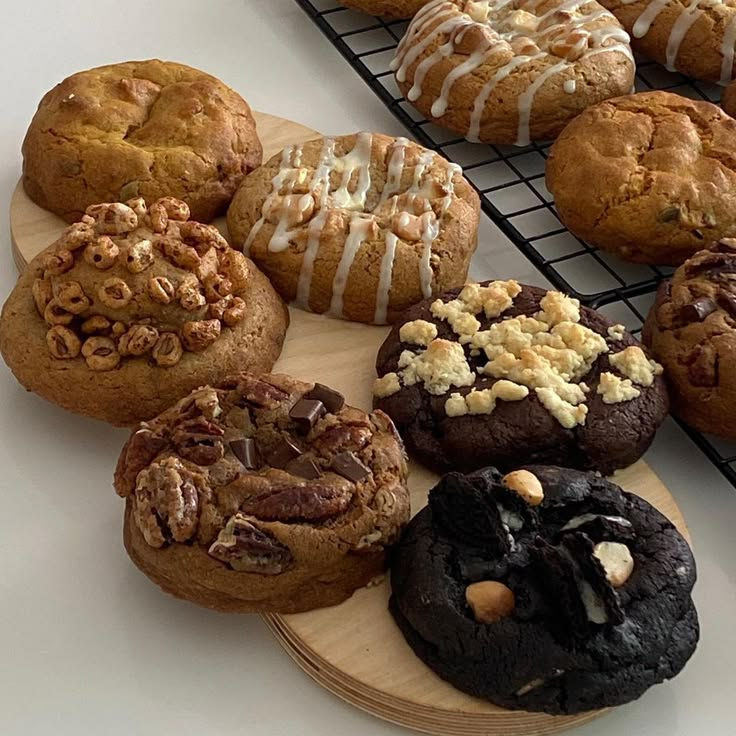

Cookies

WHY Cookies?
Cookies are small, sweet baked treats that come in a wide variety of flavors and textures, making them a beloved dessert worldwide. Typically made from a basic dough of flour, sugar, butter, and eggs, cookies can be customized with numerous ingredients like chocolate chips, nuts, fruits, or spices. They can range from soft and chewy to crisp and crunchy, depending on how they are prepared and baked. Cookies are enjoyed both as homemade treats and as pre-packaged snacks, and they often play a role in special occasions, holidays, or simply as a comforting indulgence with milk or tea. Their versatility and widespread appeal make them a favorite among all age groups.
WHY Following Recipes?
Following a recipe is crucial when making good cookies because it ensures consistency, balance, and the right texture. A well-tested recipe provides the exact measurements of ingredients like flour, sugar, butter, and leavening agents, which need to be in the correct proportions for the cookies to rise properly and achieve the desired flavor and texture. Precision in mixing techniques, baking times, and temperatures also affects the outcome; too much or too little of any ingredient or a slight deviation in baking time can result in cookies that are too dry, too soggy, or lacking in flavor. Recipes guide you through these important details, helping to avoid common mistakes and ensuring that you create delicious, perfectly baked cookies every time.
Recipes:
Classic Cookies
Double Chocolate Cookies
White Chocolate Cookies
Red Velvet Cookies